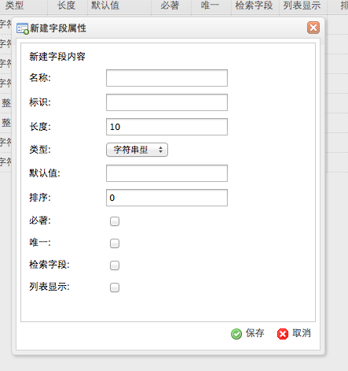
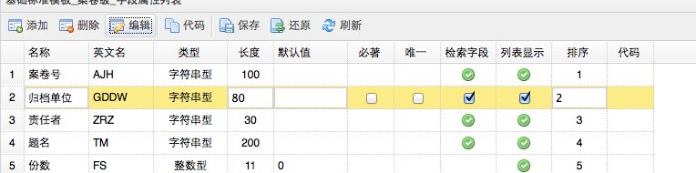
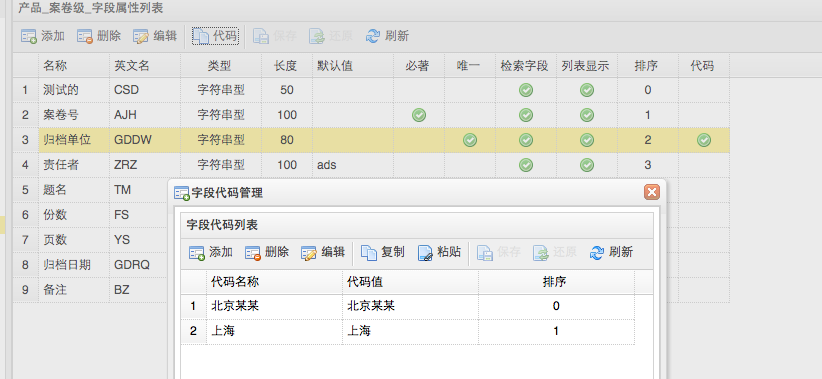

-
- 操作流程
- 点击首页功能菜单［系统维护－档案库维护］，打开档案库维护。
- 字段管理是根据每个档案类型的特殊性，在参考模版字段的基础上创建特有的字段属性，来管理档案。
- 字段管理包括字段的添加、修改、删除、代码功能。
- 添加字段
-

- 点击［添加］按钮。打开添加字段框，输入字段信息，点击［保存］按钮。
- ［名称］为字段中文名称，自动生成字段英文名称［标示］，英文名称不能重复。可以手动修改英文名称。
- ［长度］为字段的录入长度，一个汉字等于2个长度。如果长度小与录入字符数，将不能正常录入档案信息。
- ［类型］为字段的基本类型，可以选择［字符串］、［整数型］。
- ［默认值］为字段在录入档案时，自动自动录入的字符值。
- ［排序］为字段在档案里数据表格的显示顺序，排序小的字段将排列在档案数据表格的前面。
- ［检索字段］表示在智能检索、高级检索、全文检索里，要进行模糊检索。
- ［列表显示］表示该字段，是否在档案列表里显示。
- 删除字段
- 选择一个字段，点击［删除］按钮，确认删除，点击［保存］按钮。
- 删除一个字段，将不能恢复，请谨慎操作。
- 修改字段
- 选择一个字段，点击［修改］按钮，输入字段信息，点击［保存］按钮。
- 修改一个字段，只能修改字段的中文名称、长度等基本信息，不能修改字段英文名称，请谨慎操作。
-

- 字段代码
- 选择一个字段，点击［代码］按钮，打开代码框，添加字段代码。
-

- 字段代码，将在档案录入时，字段是可选择的代码，不需要录入。
- 刷新字段
- 点击［刷新］按钮，可以刷新字段列表。